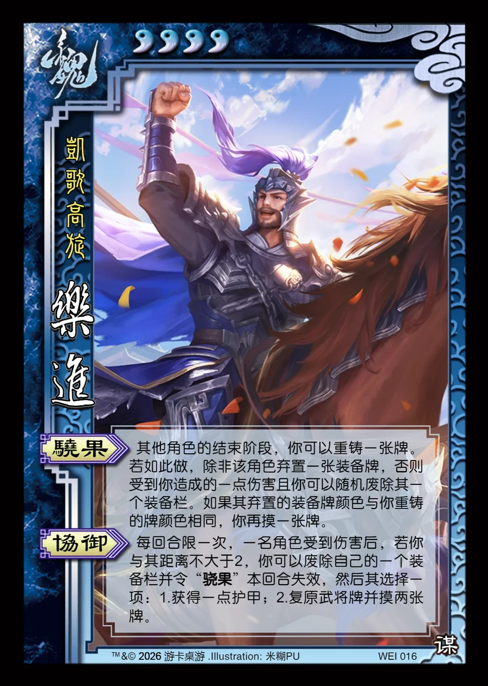

点击卡面查看大图
魏
谋乐进
♥4凯歌高旋
骁果
其他角色的结束阶段，你可以重铸一张牌。若如此做，除非该角色弃置一张装备牌，否则受到你造成的一点伤害且你可以随机废除其一个装备栏。如果其弃置的装备牌颜色与你重铸的牌颜色相同，你再摸一张牌。
协御
每回合限一次，一名角色受到伤害后，若你与其距离不大于2，你可以废除自己的一个装备栏并令“骁果”本回合失效，然后其选择一项：1.获得一点护甲；2.复原武将牌并摸两张牌。

点击卡面查看大图
凯歌高旋
其他角色的结束阶段，你可以重铸一张牌。若如此做，除非该角色弃置一张装备牌，否则受到你造成的一点伤害且你可以随机废除其一个装备栏。如果其弃置的装备牌颜色与你重铸的牌颜色相同，你再摸一张牌。
每回合限一次，一名角色受到伤害后，若你与其距离不大于2，你可以废除自己的一个装备栏并令“骁果”本回合失效，然后其选择一项：1.获得一点护甲；2.复原武将牌并摸两张牌。